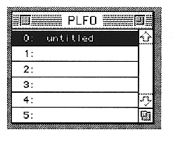
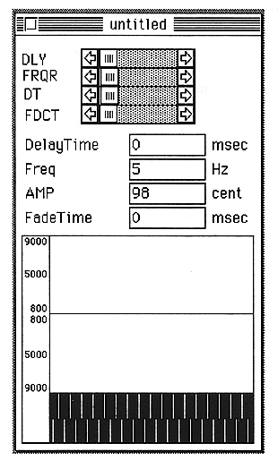

Return to previous page ｜ Return to menu ｜ Go to next page
-
PLFO window
- (Pitch Low Frequency Oscillator)

Up to 256 types of PLFO can be registered, and each name can be set. You can also double-click the left of the name to open the PLFO edit window.
-
PLFO edit window

Return to previous page ｜ Return to menu ｜ Go to next page